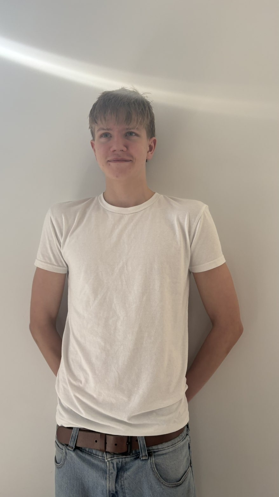
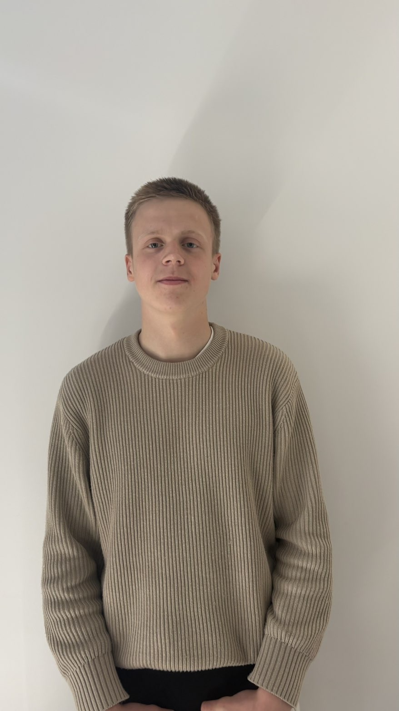
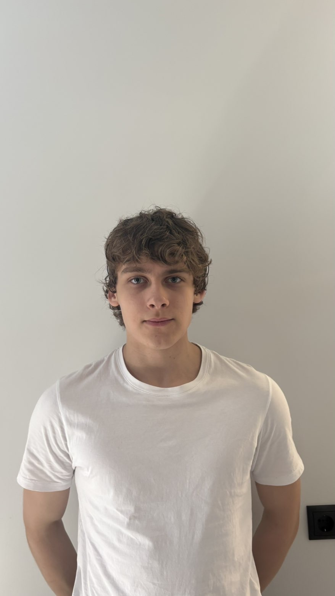
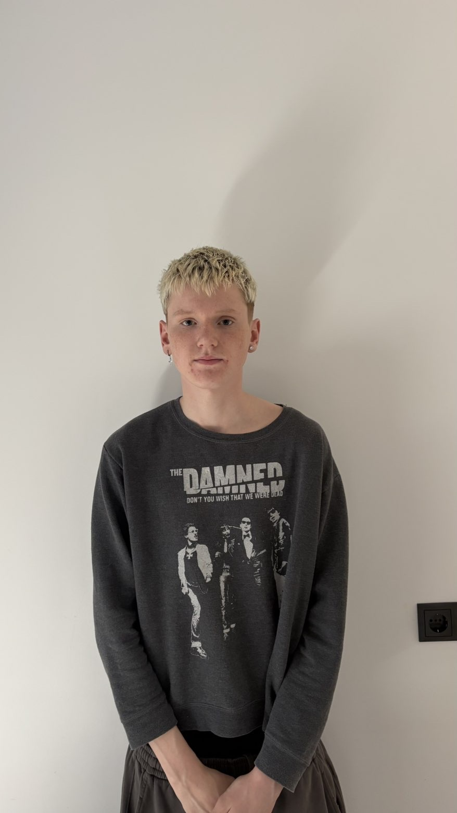
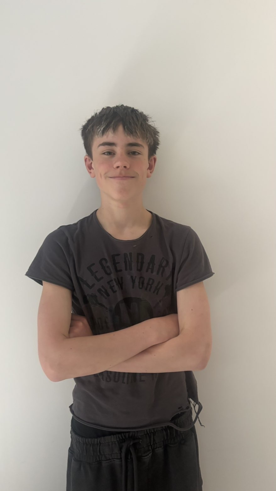
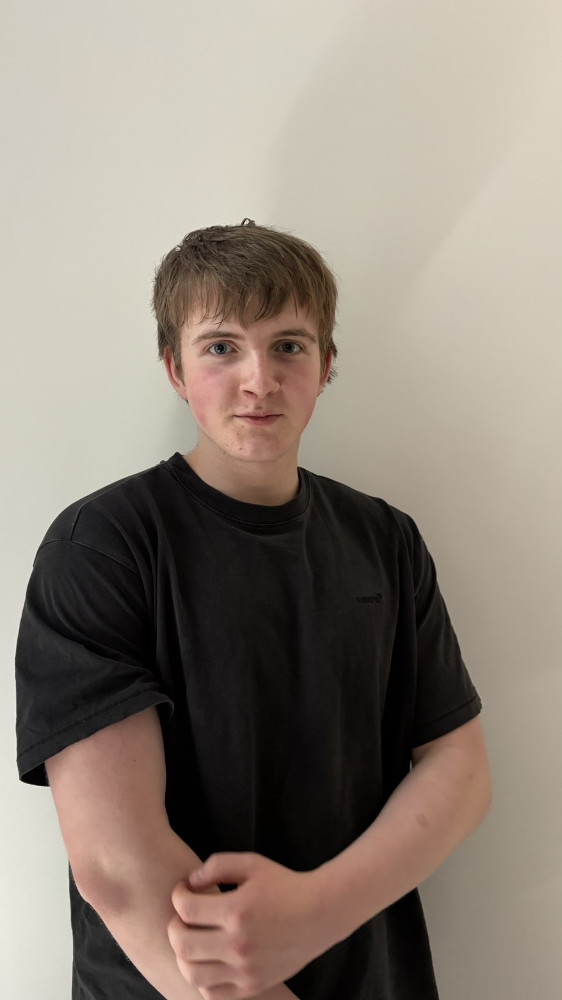
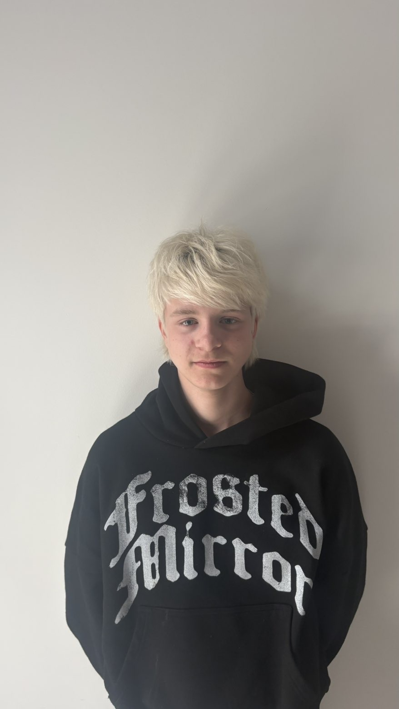
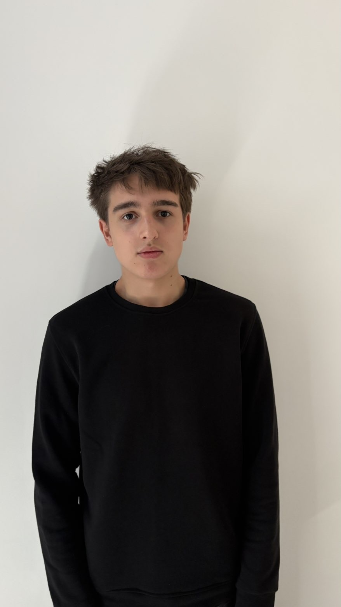

1. sæti
1. sæti
1. sæti
Jón
Jón Bjartur Þorsteinsson

2. sæti2. sæti
Óskar
Óskar Páll Adolfsson

3. sæti3. sæti
Rafael
Rafael Bjarni Viktorsson

4. sæti4. sæti
Aron
Aron Fannar Halldórsson
 5. sæti
5. sæti
5. sæti
Anton
Anton Bragi Víðisson

6. sæti6. sæti
Ari
Ari Þór Axelsson

7. sæti7. sæti
Stefán
Stefán Karl Eiríksson

8. sæti8. sæti
Almar
Almar Jökull Sigurðsson

9. sæti9. sæti
Hlynur
Hlynur Lár Gunnarsson

10. sæti10. sæti
Ivan
Ivan Kovalenko